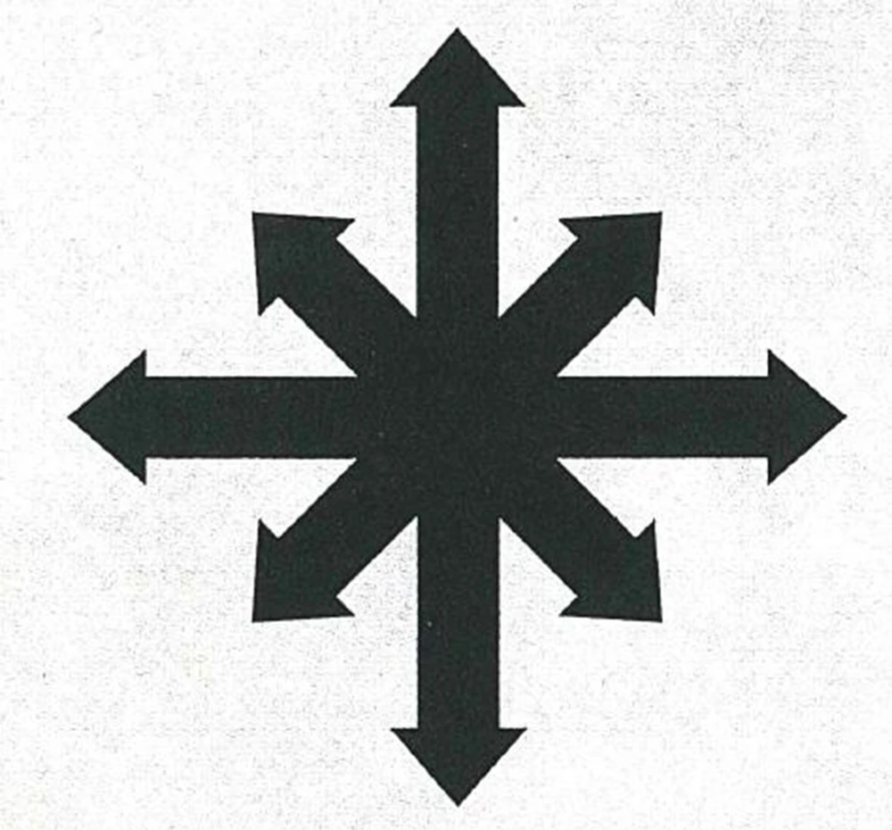

Chaos
Chaos, also known to its servants as the Primordial Truth or the Primordial Annihilator, and to the Imperium of Man as the Archenemy, is a metaphysical, psychic force embodied by the malevolent entities comprised of emotional energy that exist in the Immaterium.
The entities who embody Chaos are mostly Daemons, but the term also encompasses those mortals who pursue the goals of Chaos, ranging from simple peasants and/or manufactorum labourers who serve as Chaos Cultists, to Traitoris Militarum, planetary militia, Imperial nobles, planetary governors, and even the mighty Chaos Space Marines and Hereteks, Traitor Titan Legions and Chaos Knights of the Dark Mechanicum.
Chaos is also itself the turbulent psychic energy that comprises the alternate dimension known as the Immaterium. It gives shape to the nightmare domains of the individual Chaos Gods that are collectively called the Realm of Chaos by scholars of the Inquisition. Chaos is almost synonymous with the Warp -- the two concepts are inseparable, for Chaos is the limitless ocean of spiritual, psychic and emotional energy that defines the Immaterium and underlies the 4-dimensional material universe of space-time.
Contents
Chaos Gods
The Chaos Gods, also called the Dark Gods or the Ruinous Powers, are powerful, self-aware entities comprised solely of psychic energy who inhabit and control the psychic dimension that underlies all physical reality known as the Immaterium or the "Warp."
The Chaos Gods are in truth not really divine beings, though their great power often means there is little difference for those mortals who revere them. These Warp entities are created and sustained by the emotions and collective desires of every sentient being of the material universe. When an emotion or belief in realspace grows strong or widespread enough across the galaxy, it becomes embodied as one of the sentient denizens of the Warp.
Chaos Gods
The most powerful and most malevolent of these have become the Gods of Chaos. Although they are god-like beings, the Dark Gods are by their nature monomaniacal and completely single-minded since they are formed entirely of a single emotion or concept.
The Chaos Gods are dependent upon the emotions of mortal creatures, especially the hordes of Humanity, for their power and continued existence. As a result, the Chaos Gods strive to convert all mortals to their worship and service so that they may ultimately dominate the universe. However, if they were to win such a dark victory, it would likely destroy all of reality when the dimensional separation between realspace and the Immaterium broke down in its wake.
The Chaos Gods and the forces of Chaos that serve them are the greatest enemies of the Imperium of Man, the Aeldari and most other sentient forms of life in the Milky Way Galaxy, even if they are not fully aware yet of the threat Chaos poses, like the T'au Empire.
The Chaos Gods are able to devote a fraction of their psychic power in the Warp to create Daemons, psychic entities whose appearance and character reflect their patron god's own nature.
These Daemons may be reabsorbed into the god at their whim. The least of the minor Chaos Gods may be so limited in their power that expending that power to create a Daemon means their entire power is expended; in effect, the god becomes a Daemon.
In the Warp, the psychic reflection of similar thoughts and emotions gather together like rivulets of water running down a cliff face. They form streams and eddies of anguish and desire, pools of hatred and torrents of pride.
Since the dawn of time, these tides and waves of psychic energy have flowed unceasingly through the mirror realm of the Warp, and such is their power that they forged creatures made of the very stuff of dreams and nightmares.
Eventually, these instinctual, formless entities gained a rudimentary consciousness of their own. The Chaos Gods were born -- vast psychic presences composed of the fantasies and horrors of mortals. These are the Ruinous Powers, and each one is a reflection of the mortal passions that formed them.
First amongst them is Khorne, the Lord of Battle, possessed of towering and immortal fury. Tzeentch, the bizarre and ever-changing Architect of Fate, weaves powerful sorceries to bind the future to his will, whilst great Nurgle, the Lord of Decay, labours endlessly to spread infection and pestilence. The last of their number is Slaanesh, the Dark Prince of Chaos, indulgent of every pleasure and excess, no matter how immoral or perverse.
As the intelligent species of the Milky Way Galaxy prospered and grew, so too did their hopes and ambitions, their anger and wars, their love and hatred. This burgeoning flood of raw emotion fed the Chaos Gods and nurtured their power.
Before long, the gods reached back to their makers with a curious and hungry sentience, planting seeds of corruption in the souls of those whose dreams they passed through. So were the first mortals bound to the will of the Ruinous Powers, and seeing the fruits of their labours, the gods began their eternal work to influence the physical realm and its myriad sentient races.
Lured by promises of extraordinary power and immortality, some mortals serve the Chaos Gods willingly, fomenting misery, war and death amongst their people in order to sustain and elevate their dark masters. Yet the Chaos Gods are fickle, prone to reneging or altering a deal on a whim, and few of these worshippers are ever granted the rewards they seek.
A Chaos God can only grow in power through the actions and thoughts of mortals. Those who worship a Chaos God, and behave in a way that feeds it, are rewarded with strange "gifts," extraordinary powers and potentially, immortality as a Daemon Prince. As the Chaos Gods battle in the Warp, so their mortal followers wage war in the material universe.
The victors of the battles earn more power for their unworldy master, though the twisted plans of the Chaos Gods are such that often victory is not necessary; merely the acts of sacrifice and battle themselves.
When devotees of Chaos die, their souls do not fade in the Warp and disappear like the spirits of others to some unknown and unknowable fate. Instead, their immortal energy is swallowed into the greatness of their gods, their souls sustained forever, bound to the eternal power of Chaos.
As a Chaos God gathers such energy, it expands in power, and its influence and territory within the Warp's Realm of Chaos grows. As extensions of the gods, the appearances of these domains are formed upon the same emotions that created their masters: Khorne's realm is founded on anger and bloodletting; Tzeentch's lands are scintillating constructs of pure magic; Nurgle's territory is a haven of death and regeneration, and Slaanesh's dominion is a paradise of damning temptations.
Though realm and god are as one, the Chaos Gods each have a form that embodies their personalities and dwells at the very heart of their territories. Wreathed in unearthly power, the Chaos Gods watch over their realms, seeking any disturbances in the pattern of the Warp that signal intrusion or opportunity
Chaos SpaceMarines
Chaos SpaceMarines
Chaos Space Marines, also sometimes called Traitor Marines, Renegade Marines, or Heretic Astartes, are former Space Marines of the Imperium of Man who have chosen to abandon the service of the Emperor of Mankind and dedicate themselves to Chaos to achieve their own ends.
Chaos Chapters
Such corrupt Astartes usually belong to one of the nine original Traitor Legions that betrayed the Emperor during the ancient civil war called the Horus Heresy more than 10,000 standard years ago, while others come from Space Marine Chapters created long after the Heresy ended that have turned Renegade. Chaos can corrupt Astartes of any time and place just as its siren call leads many lesser men and women to their damnation.During the Horus Heresy, the terrible Imperial civil war that pitted the battle-brothers of the 18 known Space Marine Legions against one another, there were two factions. These were the Loyalist Space Marines who continued to serve the Imperium and the Emperor of Mankind and the Chaos Space Marines of the Traitor Legions who betrayed the Emperor and pledged their souls to the service of the four Ruinous Powers of Chaos.
During the Horus Heresy, the terrible Imperial civil war that pitted the battle-brothers of the 18 known Space Marine Legions against one another, there were two factions. These were the Loyalist Space Marines who continued to serve the Imperium and the Emperor of Mankind and the Chaos Space Marines of the Traitor Legions who betrayed the Emperor and pledged their souls to the service of the four Ruinous Powers of Chaos.
Some Traitor Marines pledged their service to all four of the Dark Gods, a malevolent force known as Chaos Undivided, whilst others preferred to dedicate themselves to the worship of only one of the Ruinous Powers. The Traitor Legions were led by the Warmaster Horus, once a primarch of the Imperium and the Emperor's most trusted friend, son, and adviser before he was corrupted by the promises and lies of the Dark Gods and his own inner flaws and ambition.
The Traitor Legions were the most powerful component of the forces of Chaos which fought during the Heresy, which also included the myriad Daemons of the Warp, Human Traitors from the Imperial Army, the potent infantry and combat walker forces of the Dark Mechanicum and Chaos Cultists drawn from across the galaxy.
The flesh and power armour of Chaos Space Marines often warps and twists into new, darker and inhuman forms under the influence of the Warp energies they are exposed to as their shapes morph to embody the corrupted Astartes' new allegiance.
Chaos Space Marines fight for everything they were once forbidden to indulge in as the ascetic servants of the Emperor and the selfless guardians of Mankind. Pleasure, wealth, mayhem, but above all else, the power to rule their fellow Humans in the name of the Chaos Gods is the driving ambition and goal of every Chaos Space Marine.
All Heretic Astartes are ultimately united by this sheer hunger for power. At first, this desire is focused towards specific goals, but as time passes, it becomes a bone-deep obsession. Though the Dark Gods are given to rewarding their mortal followers for acts of carnage that further their divine cause, the gifts they bestow upon their favoured are fickle indeed.
A particularly extravagant slaughter might be rewarded with a blood-red aura that invigorates the supplicant, but it is just as likely the champion will find his arms being reshaped as axes of bone, or that he has the face of a slavering hound.
Eventually, the Chaos Space Marine seeks immortality, to ascend to such lofty heights of favour that he is remade as a Daemon Prince. But for every successful aspirant there are hundreds of failures, mutated beyond recognition into mewling abominations called Chaos Spawn.